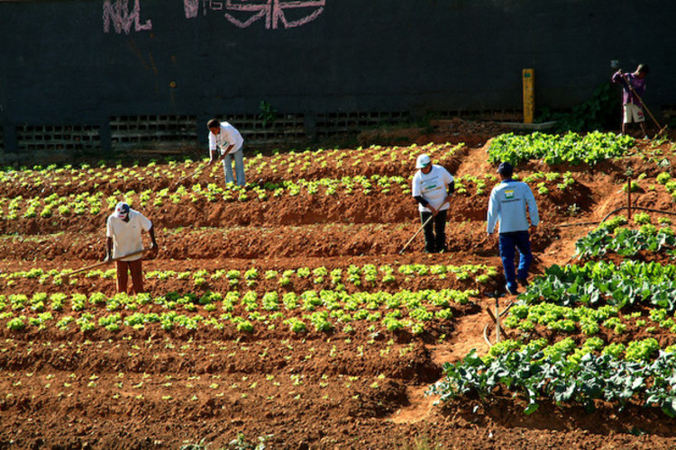

Raízes da Alimentação
O estudo da origem do alimentos revela a evolução da alimentação humana, desde a caça e coleta até o surgimento da agricultura.
AgriculturaA importância de Conhecer a Origem dos Alimentos
Leitura
O estudo da origem dos alimentos revela a evolução da alimentação humana, desde a busca na natureza até o surgimento da agricultura e as práticas agrícolas regionais.
Informaçoe
Com o comércio de alimentos ao longo dos séculos e a globalização atual, surge a necessidade de conhecer a procedência dos alimentos consumidos para promover uma alimentação consciente e sustentável.
Valorizar a diversidade cultural na produção alimentar e compreender o impacto das escolhas nutricionais são essenciais para uma relação harmoniosa com a comida e o meio ambiente.Pesquisa
A origem dos alimentos é um tema de grande importância, pois está diretamente ligada à nossa saúde, ao meio ambiente e à sustentabilidade. Cada vez mais as pessoas estão buscando compreender de onde vêm os alimentos que consomem, como foram produzidos e qual o impacto dessa produção no ecossistema.
Diversas pesquisas têm sido realizadas para investigar a origem dos alimentos e seus efeitos. Estudos mostram que uma alimentação baseada em produtos locais e sazonais pode trazer benefícios tanto para a saúde quanto para o meio ambiente. Alimentos produzidos localmente geralmente têm menor pegada de carbono, pois não precisam percorrer longas distâncias até chegar ao consumidor.
Contato
© 2024 Informativo Exemplo. Todos os direitos reservados.